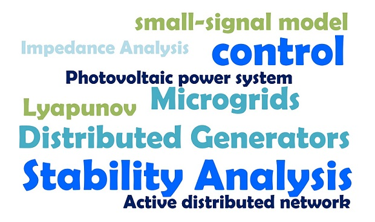

|
Meiyi Li
|
 |
Theory:
Control theory (Small-signal modeling; Characteristics root; Transfer function; Dynamics response)
Lyapunov-based stability
Impedance-based stability
Applications:
Inverter-Interfaced Distributed Generators(IIDG)
Photovoltaic power system
Active distributed network
Microgrids
|
Adaptive Control of the Inverter-Interfaced Distributed Generator (IIDG)
Research Assistant (RA),Key Laboratory of Control of Power Transmission and Conversion, Ministry of Education, Shanghai
Featured Publications:
1.Meiyi LI, W Huang, N Tai, Liuqing Yang. A Dual-Adaptivity Inertia Control Strategy for Virtual Synchronous Generator.
Published on IEEE Transactions on Power Systems (Early Access) [pdf]
- 1)offer responsive and stable frequency support.
- 2)achieve the balance between power regulation and frequency regulation according to different operating conditions.
Derived transfer functions of the IIDG power and angular frequency.
Analyzed the response characteristics (overshoot and resettling time) of the IIDG output power and frequency.
Proposed an assessment method considering the cumulative effect of the output deviation and its duration to
- 1)cope with the tradeoff between speed and tracking accuracy.
- 2)universally reflect the dynamic performance of power and frequency.
Virtual Power Angle Stability of the Inverter-interfaced Distributed Generator
RA,Research Center for Big Data and Artificial Intelligence Engineering and Technologies, Shanghai
Featured Publications:
1.Meiyi LI, W Huang, N Tai. Stability Analysis of VSG Under Grid Voltage Drop and Current Saturation.
Under review by IEEE Transactions on Power Systems
Analyzed the power-angle relationship of the virtual synchronous generator considering the voltage regulation and line resistance to illustrate when the Q-V controller might have an enhanced or deteriorative effect on stability of the DG system
Established the small-signal model of the controller using the grid voltage drop as an input to analyze dynamic characteristics of IIDG’s output power and frequency when the system recovers from the disturbance.
Revealed possible instabilities of the IIDG that were not reported previously by discussing two situations considering current saturation: non-instant saturation and instant saturation.
Lyapunov-based Stability Analysis of the Virtual Synchronous Generator
RA, Department of Electrical Engineering, SJTU
Featured Publications:
1.Meiyi LI, W Huang, N Tai. Lyapunov-Based Large Signal Stability Assessment for VSG Controlled Inverter-Interfaced Distributed Generators.
Published on Energies, Cited by 8 [pdf]
Derived the Lyapunov energy function based on Popov’s theory to determine the stability domain of the IIDG system.
Analyzed the effects of control parameters on the large-signal stability of the IIDG system.
Stability Mechanism of the Inverter-interfaced Distributed Generator
RA, Department of Electrical Engineering, SJTU
Featured Publications:
1.Meiyi LI, W Huang, N Tai. Transient Behavior Analysis of VSG-IIDG During Disturbances Considering the Current Limit Unit.
Won “Best of the Best” Conference Paper (4/1200, the only Chinese master student who won the prize in the past several years) at 2019 IEEE Power and Energy Society General Meeting [pdf]
2.Meiyi LI, W Huang, N Tai. Stability Analysis of the VSG-IIDG in the Microgrid: A Review.
Under review by Applied Energy
3.Meiyi LI, W Huang, N Tai.Control Strategy for Inverter Interfaced Distributed Generator based on Virtual Synchronous Generator using Adaptive Inertia under Frequency Disturbances.
Accepted by Power System Technology (Chinese EI Journal) [pdf]
4.M Yu, W Huang, N Tai,Meiyi LI.Adaptive Transient Stability Control Strategies of Photovoltaic Power Plants.
Won Excellent Paper at 2019 China Electrotechnical Society Academic Annual Conference
5. Meiyi LI, W Huang, N Tai.Large Signal Stability of Autonomous Operation of A VSG-IIDG: Modeling and Analysis.
Working paper
Patents:
1.PCT/CN2019/094149
2.PCT/CN2019/094150
- 1)phase and gain margin.
- 2)system capacity.
- 3)standards in accordance with power quality.
- 4)characteristic roots.
Surge Current of the IIDG during Closing-Loop Operation
RA, Department of Electrical Engineering, SJTU
Featured Publications:
1.Meiyi LI, W Huang, N Tai. Surge Current Calculation and Limit Strategy of the IIDG during Loop Closing Operation in Distribution Networks.
Oral, Accepted by 2019 IEEE Sustainable Power & Energy Conference [pdf]
2.Meiyi LI, W Huang, N Tai.Analysis and Limit Strategy of the Surge Current Caused by Closing-Loop Operation in the DG dominated Distribution Network.
Won Excellent Paper at 2019 China Electrotechnical Society Academic Annual Conference [pdf]
Presented an algorism for calculating the surge current of voltage source inverters and current source inverters.
Proposed a control scheme to limit the surge current of the IIDG during closing-loop operation in the distributed network.
|